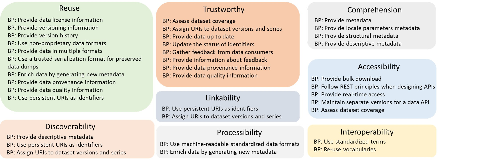

This document provides best practices related to the publication and
usage of data on the Web designed to help support a self-sustaining
ecosystem. Data should be discoverable and understandable by humans and
machines. Where data is used in some way, whether by the originator of
the data or by an external party, such usage should also be discoverable
and the efforts of the data publisher recognized. In short, following
these best practices will facilitate interaction between publishers and
consumers.
This version of the document shows its expected scope and future
direction. A template is used to show the "what", "why" and "how" of
each best practice. Comments are sought on the usefulness of this
approach and the expected scope of the final document.
Introduction
The best practices described below have been developed to encourage and
enable the continued expansion of the Web as a medium for the exchange
of data. The growth of open data by governments across the world
[[OKFN-INDEX]], the increasing publication of research data encouraged
by organizations like the Research Data Alliance [[RDA]], the harvesting
and analysis of social media, crowd-sourcing of information, the
provision of important cultural heritage collections such as at the
Bibliothèque nationale de France [[BNF]] and the sustained growth in the
Linked Open Data Cloud [[LODC]], provide some examples of this
phenomenon.
In broad terms, data publishers aim to share data either openly or with
controlled access. Data consumers (who may also be producers themselves)
want to be able to find and use data, especially if it is accurate,
regularly updated and guaranteed to be available at all times. This
creates a fundamental need for a common understanding between data
publishers and data consumers. Without this agreement, data publishers'
efforts may be incompatible with data consumers' desires.
Publishing data on the Web creates new challenges, such as how to
represent, describe and make data available in a way that it will be
easy to find and to understand. In this context, it becomes crucial to
provide guidance to publishers that will improve consistency in the way
data is managed, thus promoting the re-use of data and also to foster
trust in the data among developers, whatever technology they choose to
use, increasing the potential for genuine innovation.
This document sets out a series of best practices that will help
publishers and consumers face the new challenges and opportunities posed
by data on the Web.
Best practices cover different aspects related to data publishing and
consumption, like data formats, data access, data identifiers and
metadata. In order to delimit the scope and elicit the required features
for Data on the Web Best Practices, the DWBP
working group compiled a set of use cases [[UCR]] that represent
scenarios of how data is commonly published on the Web and how it is
used. The set of requirements derived from these use cases were used to
guide the development of the best practices.
The Best Practices proposed in this document are intended to serve a
more general purpose than the practices suggested in Best Practices for
Publishing Linked Data [[LD-BP]] since it is domain-independent and
whilst it recommends the use of Linked Data, it also promotes best
practices for data on the web in formats such as [[CSV]] and [[JSON]].
The Best Practices related to the use of vocabularies incorporate
practices that stem from Best Practices for Publishing Linked Data where
appropriate.
Audience
This document provides best practices to those who publish data on the
Web. The best practices are designed to meet the needs of information
management staff, developers, and wider groups such as scientists
interested in sharing and re-using research data on the Web. While data
publishers are our primary audience, we encourage all those engaged in
related activities to become familiar with it. Every attempt has been
made to make the document as readable and usable as possible while still
retaining the accuracy and clarity needed in a technical specification.
Readers of this document are expected to be familiar with some
fundamental concepts of the architecture of the Web [[WEBARCH]], such as
resources and URIs, as well as a number of data formats. The normative
element of each best practice is the intended outcome.
Possible implementations are suggested and, where appropriate, these
recommend the use of a particular technology such as CSV,
JSON or RDF. A basic knowledge of vocabularies and data models would be
helpful to better understand some aspects of this document.
Scope
This document is concerned solely with best practices that:
are specifically relevant to data published on the Web;
encourage publication or re-use of data on the Web;
can be tested by machines, humans or a combination of the two.
As noted above, whether a best practice has or has not been followed
should be judged against the intended outcome, not the possible
approach to implementation which is offered as guidance. A best
practice is always subject to improvement as we learn and evolve the Web
together.
Context
In general, the Best Practices proposed for publication and usage of
Data on the Web refer to datasets and distributions. For this document,
as defined by [[DCAT]], "a dataset is a collection of data, available
for access or download in one or more formats". By data, "we mean known
facts that can be recorded and that have implicit meaning" [[Navathe]].
In ordet to meet the requirements of several data consumers datasets
should be available in more than one distribution. Again quoting the
[[DCAT]] specification, a distribution "Represents a specific available
form of a dataset. Each dataset might be available in different forms,
these forms might represent different formats of the dataset or
different endpoints. Examples of distributions include a downloadable
CSV file, an API or an RSS feed".
In our context, two importante aspects should be considered when
publishing data on the Web: the sharing of data in a large scale and the
use of the Web as a platform for data publication and sharing. Large
scale data sharing allows datasets to be used for several groups of data
consumers, which may have distinct requirements and expectations about
the data. Given this heterogeneity and the fact that data publishers and
data consumers may be unknown to each other, it is necessary to offer
some additional information to help understanding and manipulating the
data. Such information may also contribute to leverage dataset
trustworthy and reuse. Additional information that should be published
as part of the dataset includes but is not limited to: structural
metadata, descriptive metadata, access information, data quality
information, provenance information, license information and usage
information.
The second aspect, the use of the Web as a platform for data
publication and sharing, concerns the architectural bases of the Web as
discussed in [[WEBARCH]]. The DWBP document is mainly interested on the
Identification principle that says that URIs should be used to identify
resources. In our context, a resource may be a whole dataset or a
specific item of given dataset. All resources should be published with
stable URIs, so that they can be referenced. At the very least, give
them unique and stable URIs, if you don't want to make them directly
accessible. Besides it should be possible to create links between
resources. A link may be defined as a relationship between two resources
when one resource refers to the other resource by means of a URI.
The following diagram illustrates the dataset composition (data values
and metadata) together with other components related to the dataset
publication and usage. Data values correspond to the data itself and may
be available in one or more distributions, which should be defined by
the publisher considering data consumer's expectations. The Metadata
component corresponds to the additional information that describes the
dataset and dataset distributions, helping the manipulation and the
reuse of the data. In order to allow an easy access to the dataset
and its corresponding distributions multiple Dataset Access mechanisms
should be available such as APIs and bulk download. Finally, to promote
the interoperability among datasets it is important to adopt Data
Vocabularies and Standards.
Data on the Web Challenges
The openness and flexibility of the Web creates new challenges for data
publishers and data consumers. In contrast to conventional databases,
for example, where there is a single data model to represent the data
and a database management system (DBMS) to control data access, data on
the Web allows for the existence of multiple ways to represent and to
access data. Furthermore, publishers and consumers may be unknown to
each other and be part of entirely disparate communities with different
norms and in-built assumptions so that it becomes essential to provide
information about data structure, quality, provenance and any terms of
use. The following diagram summarizes some of the main challenges faced
when publishing or consuming data on the Web. These challenges were
identified from the DWBP
Use Cases and Requirements [[UCR]] and are described by one or more
questions. As presented in the diagram, each one of these challenges is
addressed by one or more best practices.
Best Practices Benefits
In order to encourage data publishers to adopt the DWBP, the list below
describes the main benefits of applying the proposed BP. Each benefit
represents an improvement in the way how datasets are available on the
Web.
Comprehension: humans will have a better understanding about the
data structure, the data meaning, the metadata and the nature of the
dataset.
Processibility: machines will be able to automatically process and
manipulate the data within a dataset.
Discoverability machines will be able to automatically discover a
dataset or data within a dataset.
Reuse: the chances of dataset reuse by different groups of data
consumers will increase.
Trustworthy: the confidence of consumers on the dataset will
improve.
Linkability: it will be possible to create links between data
resources (datasets and data items).
Accessibility: humans and machines will be able to access the data
up to date in a variety of forms.
Interoperability: it will be easier to reach consensus among data
publishers and consumers.
The figure below shows the benefits that data publishers will gain with
the adoption of each one of the proposed best practices. 
Best Practices Template
This section presents the template used to describe Data on the Web
Best Practices.
Best Practice Template
Short description of the BP
Why
This section answers two crucial questions:
Why this is unique to publishing or re-using data on the Web?
How does this encourages publication or re-use of data on the
Web?
A full text description of the problem
addressed by the best practice may also be provided. It can be any
length but is likely to be no more than a few sentences.
Intended Outcome
What it should be possible to do when a data publisher follows the
best practice.
Possible Approach to Implementation
A description of a possible implementation strategy is provided.
This represents the best advice available at the time of writing but
specific circumstances and future developments may mean that
alternative implementation methods are more appropriate to achieve
the intended outcome.
How to Test
Information on how to test the BP has been met. This might or might
not be machine testable.
This section contains the best practices to be used by data publishers
in order to help them and data consumers to overcome the different
challenges faced when publishing and consuming data on the Web. One or
more best practices were proposed for each one of the previously
described challenges. Each BP is related to one or more requirements
from the Data on the Web Best
Practices Use Cases & Requirements document.
Example
This example serves as a basis for elaboration that will be
described in subsequent sections. It helps to illustrate how best
practices may be applied.
John works for the Transport Agency of MyCity and he is in charge
of the publication of data on the Web about bus timetables as well
as real time data about the traffic of the city. John decides to
create two datasets: one for the bus timetables and other one for
the real time traffic data.
Some requirements that should be addressed:
The dataset for bus timetables must be available in two
languages: english and portuguese;
Both datasets must be available in csv and json-ld formats;
When necessary RDF examples will be used to show the result of the
application of some best practices. RDF examples in this document are
written in Turtle syntax [[TURTLE]] and [[JSON-LD]].
In this current version, examples are presented just in Turtle
syntax.
Metadata
The Web is an open information space, where the absence of a specific
context, such a company's internal information system, means that the
provision of metadata is a fundamental requirement. Data will not be
discoverable or reusable by anyone other than the publisher if
insufficient metadata is provided. Metadata provides additional
information that helps data consumers better understand the meaning of
data, its structure, and to clarify other issues, such as rights and
license terms, the organization that generated the data, data quality,
data access methods and the update schedule of datasets.
Metadata can be used to help tasks such as dataset discovery and re-use,
and can be assigned considering different levels of granularity from a
single property of a resource to a whole dataset, or all datasets from a
specific organization.
Metadata can be of different types. These types can be classified in
different taxonomies, with different grouping criteria. For example, a
specific taxonomy could define three metadata types according to
descriptive, structural and administrative features. Descriptive
metadata serves to identify a dataset, structural metadata serves to
understand the structure in which the dataset is distributed and
administrative metadata serves to provide information about the
version, update schedule etc. A different taxonomy could define
metadata types with a scheme according to tasks where metadata are
used, for example, discovery and re-use.
Provide metadata
Metadata must be provided for both human users
and computer applications
Why
Providing metadata is a fundamental requirement when publishing
data on the Web because data publishers and data consumers may be
unkown to each other. Then, it is essential to provide information
that helps data consumers, i.e., human users and computer
applications, to understand the data as well as other important
aspects that describes a dataset.
Intended Outcome
It must be possible for humans to understand the metadata, which
makes it human readable
metadata.
It should be possible for computer applications, notably user
agents, to process the metadata, which makes it machine
readable metadata.
Possible Approach to Implementation
Possible approaches to provide human readable metadata:
to provide metadata as part of an HTML Web page
to provide metadata as a separate text file
Possible approaches to provide machine readable metadata:
machine readable metadata may be provided in a serialization
format such as Turtle and JSON, or it can be embedded in the
HTML page using [[HTML-RDFA]] or [[JSON-LD]]. If multiple
formats are published separately, they should be served from the
same URL using content negotiation. Maintenance of multiple
formats is best achieved by generating each available format on
the fly based on a single source of the metadata.
when defining machine readable metadata, reusing existing
standard terms and popular vocabularies are strongly
recommended. For example, Dublin Core Metadata (DCMI) terms
[[DC-TERMS]] and Data Catalog Vocabulary [[VOCAB-DCAT]] should
be used to provide descriptive metadata (see Section ).
How to Test
For human readable metadata, check that a human user
can understand the metadata associated with a dataset.
For machine readable metadata, access the same URL
either with a user agent that accepts a more data oriented format
or a tool that extracts the data from an HTML page.
The overall features of a dataset must be
described by metadata
Why
Explicitly providing dataset descriptive information allows user
agents to automatically discover datasets available on the Web and
it allows humans to understand the nature of the dataset.
Intended Outcome
It should be possible for humans to understand the nature of the
dataset.
It should be possible for user agents be able to automatically
discover the dataset.
Possible Approach to Implementation
Discovery metadata should include the following overall features
of a dataset:
The title and a description
of the dataset.
The keywords describing the dataset.
The date of publication of the dataset.
The entity responsible (publisher) for
making the dataset available.
The contact point of the dataset.
The spatial coverage of the dataset.
The temporal period that the dataset
covers.
The themes/categories covered by a
dataset.
The machine readable version of the discovery metadata may be
provided according to the vocabulary recommended by W3C to
describe datasets, i.e. the Data Catalog Vocabulary
[[VOCAB-DCAT]]. This provides a framework in which datasets can be
described as abstract entities.
How to Test
Check that the metadata for the dataset itself includes the
overall features of the dataset.
Check if a user agent can automatically discover the dataset.
Information about locale parameters (date,
time, and number formats, language) should be described by metadata.
Why
Providing locale parameters metadata helps data consumers, i.e.,
human users and computer applications, to understand and to
manipulate the data, improving the re-use of the data. A locale is
a set of parameters that defines specific data aspects, such as
language and formatting used for numeric values and dates.
Providing information about the locality for which the data is
currently published aids data users in interpreting its meaning.
Date, time, and number formats can have very different meanings,
despite similar appearances. Making the language explicit allows
users to determine how readily they can work with the data and may
enable automated translation services.
Intended Outcome
It should be possible for data consumers to interpret the meaning
of dates, times and numbers accurately by referring to locale
information.
Possible Approach to Implementation
Locale parameters metadata should include the following
information:
The language(s) of the dataset.
The formats used for numeric values, dates and time.
The machine readable version of the discovery metadata may be
provided according to the vocabulary recommended by W3C to
describe datasets, i.e. the Data Catalog Vocabulary
[[VOCAB-DCAT]].
How to Test
Check that the metadata for the dataset itself includes the
language in which it is published and that all numeric, date, and
time fields have locale metadata provided either with each field
or as a general rule.
Information about the schema and internal
structure of a distribution must be described by metadata
Why
Providing information about the internal structure of a
distribution can be helpful when exploring or querying the
dataset. Besides, structural metadata provides information that
helps to understand the meaning of the data.
Intended Outcome
It should be possible for humans to understand the internal
structure or schema of a distribution.
It should be possible for user agents be able to automatically
process the structural metadata about a distribution.
Possible Approach to Implementation
Structural metadata is available according to the format of a
specific distribution and it may be provided within separate
documents or embedded into the document. For more details see the
links below.
A license is a very useful piece of information to be attached to
data on the Web. As defined by the Dublin Core Metadata Initiative
[[DC-TERMS]], a license is a legal document giving official permission
to do something with the data with which it is associated. According
to the type of license adopted by the publisher, there might be more
or fewer restrictions on sharing and re-using data. In the context of
data on the Web, the license of a dataset can be specified within the
data, or outside of it, in a separate document to which it is linked.
Provide data license
information
Data license information should be available
Why
The presence of license information is essential for data
consumers to assess the usability of data. User agents, for
example, may use the presence/absence of license information as a
trigger for inclusion or exclusion of data presented to a
potential consumer.
Intended outcome
It should be possible for humans to understand possible
restrictions placed on the use of a distribution.
It should be possible for machines to automatically detect the
data license of a distribution.
Possible Approach to Implementation
The machine readable version of the data license metadata may be
provided using one of the following vocabularies that include
properties for linking to a license:
Dublin Core [[DC-TERMS]]
Creative Commons [[CC-VOCAB]]
schema.org [[SCHEMA-ORG]]
XHTML [[XHTML-VOCAB]]
There are also a number of machine readable rights languages,
including:
The Creative Commons Rights Expression Language [[ccREL]]
The Open Data Rights Language [[ODRL]]
The Open Data Rights Statement Vocabulary [[ODRS]].
How to Test
Check that the metadata for the dataset itself includes the data
license information.
Check if a user agent can automatically detect the data license
of the dataset.
Provenance originates from the French term "provenir" (to come from),
which is used to describe the curation process of artwork as art is
passed from owner to owner. Data provenance, in a similar way, is
metadata that allows data providers to pass details about the data
history to data users. Provenance becomes particularly important when
data is shared between collaborators who might not have direct contact
with one another either due to proximity or because the published data
outlives the lifespan of the data provider projects or organizations.
The Web brings together business, engineering, and scientific
communities creating collaborative opportunities that were previously
unimaginable. The challenge in publishing data on the Web is providing
an appropriate level of detail about its origin. The data publishers
may not necessarily be the data provider and so collecting and
conveying this corresponding metadata is particularly important.
Without provenance, consumers have no inherent way to trust the
integrity and credibility of the data being shared. Data publishers in
turn need to be aware of the needs of prospective consumer communities
to know how much provenance detail is appropriate.
Provide data
provenance information
Data provenance information should should be
available.
Why
Without accessible data provenance, data consumers will not know
the origin or history of the published data.
Intended Outcome
It should be possible for humans to know the origin or history of
the dataset.
It should be possible for machines to automatically process the
provenance information about the dataset.
Possible Approach to Implementation
The machine readable version of the data provenance may be
provided according to the ontology recommended by W3C to describe
provenance information, i.e., the Provenance Ontology [[PROV-O]].
How to Test
Check that the metadata for the dataset itself includes the
provenance information about the dataset.
Check if a computer application can automatically process the
provenance information about the dataset.
Data quality is commonly defined as “fitness for use” for a specific
application or use case. It can affect the potentiality of the
application that use data, as a consequence, its inclusion in the data
publishing and consumption pipelines is of primary importance.
Usually, the assessment of quality involves different kinds of
quality dimensions, each representing groups of characteristics that
are relevant to publishers and consumers. Measures and metrics are
defined to assess the quality for each dimension. There are heuristics
designed to fit specific assessment situations that rely on quality
indicators, namely, pieces of data content, pieces of data
meta-information, and human ratings that give indications about the
suitability of data for some intended use.
Provide data quality
information
Data Quality information should be available.
Why
Data quality might seriously affect the suitability of data for
specific applications, including applications very different from
the purpose for which it was originally generated. Documenting
data quality significantly eases the process of datasets
selection, increasing the chances of re-use. Independently from
domain-specific peculiarities, the quality of data should be
documented and known quality issues should be explicitly stated in
metadata.
Intended Outcome
It should be possible for humans to have access to information
that describes the quality of the dataset.
It should be possible for machines to automatically process the
quality information about the dataset.
Possible Approach to Implementation
The machine readable version of the dataset quality metadata may
be provided according to the vocabulary that is being developed by
the DWBP
working group , i.e., the Data Quality Vocabulary [[DQV]].
How to Test
Check that the metadata for the dataset itself includes quality
information about the dataset.
Check if a computer application can automatically process the
quality information about the dataset.
Datasets published on the Web may change over time. Some datasets
are updated on a schedule basis and other datasets are changed as
improvements in collecting the data make updates worthwhile. In order
to deal with these changes, new versions of a dataset may be created.
Dataset versioning has been the subject of numerous discussions,
however there is no consensus about when creating a new version of a
datset. In the following we provide some guidance about when to create
a new dataset version, but the publisher should feel free to decide
when to create a new dataset or a new version of an existing dataset.
In general, a dataset may change with respect its data as well as
the metadata that describes it. Considering data updates, we may say
that a dataset B is considered a version of an existing dataset A,
when A and B store values for the same observation about the world and
dataset B gives new values to such observation. These new values may
result, for example, from the updating of existing data or the
inclusion of new data. To illustrate this definition, consider the
following scenarios related to a dataset that collects data about bus
timetables:
Scenario 1: a new bus stop is created and its timetable doesn’t
exist on the dataset;
Scenario 2: an existing bus stop is removed and its timetable
should be deleted from the dataset;
Scneario 3: an error was identified in one of the existing
timetables stored in the dataset and this error must be corrected;
In all scenarios, a new dataset, i.e. a new version of the existing
dataset, should be created to reflect the corresponding update.
Considering metadata updates, we should evaluate the impact of the
update on the data in order to choose between the creation of a new
dataset or just the updating of the dataset description. For example,
an update on the structural metadata of a dataset may result in the
creation of a new dataset while the updating of descriptive metadata
requires just the modification of the current dataset definition. In
the first case, structural changes will have an impact on how the data
is being described and then a new dataset should be created.
It is important to note that the creation of multiple datasets to
represent time series as well as spatial series, e.g. the same kind of
data for different regions, are not considered as multiple versions
for the same dataset. In this case, each dataset covers a different
observation about the world and should be treated as a new dataset
instead of a new version of an existing dataset. This is the case of a
dataset that collects data about weakly weather forecast of a given
city, where every week a new dataset should be created to store data
about that specific week.
Even for small changes it is important to keep track of the
different dataset versions to make the dataset trustworthy. Publishers
should remember that a given dataset may be in use for one or more
data consumers and they should be notified about the creation of new
versions or it should be possible to automatically identify different
versions of the same dataset. All these types of dataset updates need
a consistent, informative approach to versioning, so data consumers
can understand and work with the changing data.
The following best practices address issues that arise in tracking
and managing different versions of datasets.
Provide versioning
information
Information about dataset versioning should be
available.
Why
Version information makes a dataset uniquely identifiable.
Uniqueness can be used by data consumers to determine how data has
changed over time and to determine specifically which version of a
dataset they are working with. Good data versioning enables
consumers to understand if a newer version of a dataset is
available. Explicit versioning allows for repeatability in
research, enables comparisons, and prevents confusion. Using
unique version numbers that follow a standardized approach can
also set consumer expectations about how the versions differ.
Intended Outcome
It should be possible for data consumers to easily determine
which version of the dataset they are working with.
Possible Approach to Implementation
The precise method adopted for providing versioning information
may vary according to the context, however there are some basic
guidelines that can be followed, for example:
Include a unique version number as part of the metadata for
the dataset.
Use a consistent numbering scheme with a meaningful approach
to incrementing digits, such as [[SchemaVer]].
If the data is made available through an API, the URI used to
request the latest version of the data should not change as the
versions change, but it should be possible to request a specific
version through the API.
Use the [[Memento protocol]], or components thereof, to
express temporal versioning of a dataset and to access the
version that was operational at a given datetime. The Memento
protocol aligns closely with the approach for assigning URIs to
versions described in the following and used for W3C
specifications.
The Web Ontology Language [[OWL2-QUICK-REFERENCE]] and the
Provenance, authoring and versioning Ontology [[PAV]] provides a
number of annotation properties for version information.
How to Test
Check that a unique version number or date is provided with the
metadata describing the dataset.
A version history about the dataset should be
available.
Why
In creating applications that use data, it can be helpful to
understand the variability of that data over time. Interpreting
the data is also enhanced by an understanding of its dynamics.
Determining how the various versions of a dataset differ from each
other is typically very laborious unless a summary of the
differences is provided.
Intended Outcome
It should be possible for data consumers to understand how the
dataset typically changes from version to version and how any two
specific versions differ.
Possible Approach to Implementation
Provide a list of published versions and a description for each
version that explains how it differs from the previous version. An
API can expose a version history with a single dedicated URL that
retrieves the latest version of the complete history.
Which vocabulary should be used to describe the
versioning history? This is Issue-168
How to Test
Check that a list of published versions is available, and that
each version is described.
Identifiers take many forms and are used extensively in every
information system. Data discovery, usage and citation on the Web
depends fundamentally on the use of HTTP (or HTTPS) URIs: globally
unique identifiers that can be looked up by dereferencing them over
the Internet [[RFC3986]]. It is perhaps worth emphasizing some key
points about URIs in the current context.
URIs are 'dumb strings', that is, they carry no semantics. Their
function is purely to identify a resource.
Although the previous point is accurate, it would be perverse for
a URI such as http://example.com/dataset.csv to return anything
other than a CSV file. Human readability is helpful.
When de-referenced (looked up), a single URI may offer the same
resource in more than one format. http://example.com/dataset may
offer the same data in, say, CSV, JSON and XML. The server returns
the most appropriate format based on
content negotiation .
One URI may redirect to another.
De-referencing a URI triggers a computer program to run on a
server so that the URI acts as a call to an API. The server may
therefore do something as simple as return a single, static file, or
it may carry out complex processing. Precisely what processing is
carried out, i.e. the software on the server, is completely
independent of the URI itself.
Use persistent
URIs as identifiers of datasets
Datasets must be identified by a persistent
URI.
Why
Adopting a common identification system enables basic data
identification and comparison processes by any stakeholder in a
reliable way. They are an essential pre-condition for proper data
management and re-use.
Intended Outcome
Datasets or information about datasets, must be discoverable and
citable through time, regardless of the status, availability or
format of the data.
Possible Approach to Implementation
To be persistent, URIs must be designed as such and backed up by
organizational commitments. A lot has been written on this topic
as the table below shows.
Some sources of information related to URI persistence
The table links to Designing URI Sets for the UK
Public Sector. A newer version of this document (which was the
first of its kind) exists but is on a GitHub
repo. It seems that this might happen due to changes in
organisation behind data.gov.uk. If this happens, we should update
the link to point to the new version.
URIs can be long. In a dataset of even moderate size, storing
each URI is likely to be repetitive and obviously wasteful.
Instead, define locally unique identifiers for each element and
provide data that allows them to be converted to globally unique
URIs programmatically. The Metadata Vocabulary for Tabular Data
[[tabular-metadata]] provides mechanisms for doing this within
tabular data such as CSV files, in particular using URI
template properties such as the about
URL property.
Where a data publisher is unable or unwilling to manage its URI
space directly for persistence, an alternative approach is to use
a redirection service such as purl.org.
This provides persistent URIs that can be redirected as required
so that the eventual location can be ephemeral. The software
behind such services is freely available so that it can be
installed and managed locally if required.
Digital Object Identifiers (DOIs)
offer a similar alternative. These identifiers are defined
independently of any Web technology but can be appended to a 'URI
stub.' DOIs are an important part of the digital infrastructure
for research data and and libraries.
How to Test
Check that each dataset in question is identified using a URI
that has been assigned under a controlled process as set out in
the previous section. Ideally, the relevant Web site includes a
description of the process and a credible pledge of persistence
should the publisher no longer be able to maintain the URI space
themselves.
Use
persistent URIs as identifiers within datasets
Datasets should use and reuse other people's
URIs as identifiers where possible.
Why
The power of the Web lies in the Network effect. The
first telephone only became useful when the second telephone meant
there was someone to call; the third telephone made both of them
more useful yet. Data becomes more valuable if it refers to other
people's data about the same thing, the same place, the same
concept, the same event, the same person, and so on. That means
using the same identifiers across datasets and making sure that
your identifiers can be referred to by other datasets. When those
identifiers are HTTP URIs, they can be looked up and more data
discovered.
These ideas are at the heart of the 5
Stars of Linked Data where one data point links to another,
and of Hypermedia
where links may be to further data or to services (or more
generally 'affordances') that act on or relate to the data in some
way. Examples include a bug reporting mechanisms, processors, a
visualization engine, a sensor, an actuator etc. In both Linked
Data and Hypermedia, the emphasis is put on the ability for
machines to traverse from one resource to another following links
that express relationships.
That's the Web of Data.
Intended Outcome
That one data item can be related to others across the Web
creating a global information space accessible to humans and
machines alike.
I changed data point for data item. Bernadette
Possible Approach to Implementation
This is a topic in itself and a general document such as this can
only include superficial detail.
Developers know that very often the problem they're trying to
solve will have already been solved by other people. In the same
way, if you're looking for a set of identifiers for obvious things
like countries, currencies, subjects, species, proteins, cities
and regions, Nobel prize winners – someone's done it already. The
steps described for discovering
existing vocabularies [[LD-BP]] can readily be adapted.
ensure URI sets you use are published by a trusted group or
organization;
ensure URI sets have permanent URIs.
If you can't find an existing set of identifiers that meet your
needs then you'll need to create your own, following the patterns
for URI persistence so that others will add value to your data by
linking to it.
How to Test
Check that within the dataset, references to things that don't
change or that change slowly, such as countries, regions,
organizations and people, as referred to by URIs or by short
identifiers that can be appended to a URI stub. Ideally the URIs
should resolve, however, they have value as globally scoped
variables whether they resolve or not.
URIs should be assigned to individual versions
of datasets as well as the overall series.
Why
Like documents, many datasets fall into natural series or groups.
For example:
noon temperature readings in central London 1850 to the
present day;
today's noon temperature in London;
the temperature in London at noon on 3rd June 2015.
In different circumstances, it will be appropriate to refer
separately to each of these examples (and many like them).
Intended Outcome
It should be possible to refer to a specific version of a dataset
and to concepts such as a 'dataset series' and 'the latest
version.'
Possible Approach to Implementation
The W3C provides a good example of how to do this. The
(persistent) URI for this document is
http://www.w3.org/TR/2015/WD-dwbp-20150224/. That identifier
points to an immutable snapshot of the document on the day of its
publication. The URI for the 'latest version' of this document is
http://www.w3.org/TR/dwbp/ which is an identifier for a series of
closely related documents that are subject to change over time. At
the time of publication, these two URIs both resolve to this
document. However, when the next version of this document is
published, the 'latest version' URI will be changed to point to
that.
How to Test
Check that each version of a dataset has its own URI, and that
logical groups of datasets are also identifiable.
The formats in which data is made available to consumers are a key
aspect of making that data usable. The best, most flexible access
mechanism in the world is pointless unless it serves data in formats
that enable use and reuse. Below we detail best practices in selecting
formats for your data, both at the level of files and that of
individual fields. W3C encourages use of formats that can be used by
the widest possible audience and processed most readily by computing
systems. Source formats, such as database dumps or spreadsheets, used
to generate the final published format, are out of scope. This
document is concerned with what is actually published rather than
internal systems used to generate the published data.
Use
machine-readable standardized data formats
Data must be available in a machine-readable
standardized data format that is adequate for its intended or
potential use.
Why
As data becomes more ubiquitous, and datasets become larger and
more complex, processing by computers becomes ever more crucial.
Posting data in a format that is not machine readable places
severe limitations on the continuing usefulness of the data. Data
becomes useful when it has been processed and transformed into
information.
Using non-standard data formats is costly and inefficient, and
the data may lose meaning as it is transformed. On the other hand,
standardized data formats enable interoperability as well as
future uses, such as remixing or visualization, many of which
cannot be anticipated when the data is first published. The use of
non-proprietary data formats should also be considered since it
increases the possibilities for use and re-use of data
Intended Outcome
It should be possible for machines to easily read and process
data published on the Web.
It should be possible for data consumers to use computational
tools typically available in the relevant domain to work with the
data.
It should be possible for data consumers who wants to use or
re-use the data to do so without investment in proprietary
software.
Possible Approach to Implementation
Make data available in a machine readable standardized data
format that is easily parseable including but not limited to CSV,
XML, Turtle, NetCDF, JSON and RDF.
How to Test
Check that the data format conforms to a known machine-readable
data format specification.
Data should be available in multiple data
formats.
Why
Providing data in more than one format reduces costs incurred in
data transformation. It also minimizes the possibility of
introducing errors in the process of transformation. If many users
need to transform the data into a specific data format, publishing
the data in that format from the beginning saves time and money
and prevents errors many times over. Lastly it increases the
number of tools and applications that can process the data.
Intended Outcome
It should be possible for data consumers to work with the data
without transforming it.
Possible Approach to Implementation
Consider the data formats most likely to be needed by intended
users, and consider alternatives that are likely to be useful in
the future. Data publishers must balance the effort required to
make the data available in many formats, but providing at least
one alternative will greatly increase the usability of the data.
How to Test
Check that the complete dataset is available in more than one
data format.
Data is often represented in a structured and controlled way, making
reference to a range of vocabularies, for example, by defining types
of nodes and links in a data graph or types of values for columns in a
table, such as the subject of a book, or a relationship “knows”
between two persons. Additionally, the values used may come from a
limited set of pre-existing values or resources: for example object
types, roles of a person, countries in a geographic area, or possible
subjects for books. Such vocabularies ensure a level of control,
standardization and interoperability in the data. They can also serve
to improve the usability of datasets. Say, a dataset contains a
reference to a concept described in several languages. Such reference
allows applications to localize their display of their search
depending on the language of the user.
According to W3C, vocabularies
define the concepts and relationships (also referred to as “terms” or
“attributes”) used to describe and represent an area of concern.
Vocabularies are used to classify the terms that can be used in a
particular application, characterize possible relationships, and
define possible constraints on using those terms. Several categories
of vocabularies have been coined, for example, ontology, controlled
vocabulary, thesaurus, taxonomy, code list, semantic network.
There is no strict division between the artifacts referred to by
these names. “Ontology” tends however to denote the vocabularies of
classes and properties that structure the descriptions of resources in
(linked) datasets. In relational databases, these correspond to the
names of tables and columns; in XML, they correspond to the elements
defined by an XML Schema. Ontologies are the key building blocks for
inference techniques on the Semantic Web. The first means offered by
W3C for creating ontologies is the RDF Schema [[RDF-SCHEMA]] language.
It is possible to define more expressive ontologies with additional
axioms using languages such as those in The Web Ontology Language
[[OWL2-OVERVIEW]].
On the other hand, “controlled vocabularies”, “concept schemes”,
“knowledge organization systems” enumerate and define resources that
can be employed in the descriptions made with the former kind of
vocabulary. A concept from a thesaurus, say, “architecture”, will for
example be used in the subject field for a book description (where
“subject” has been defined in an ontology for books). For defining the
terms in these vocabularies, complex formalisms are most often not
needed. Simpler models have thus been proposed to represent and
exchange them, such as the ISO 25964 data model [[ISO-25964]] or W3C's
Simple Knowledge Organization System [[SKOS-PRIMER]].
Use
standardized terms
Standardized terms should be used to provide
data and metadata
A definition for standardized term should be
included in the glossary to clarify the difference between
standardized terms and vocabulary.
Issue-209
Why
The need for code lists and other commonly used terms for data
values and for describing metadata is to avoid as much as possible
ambiguity and clashes in the terms chosen for data and metadata
information. The key reason is to be able to refer to the
standardized body/organization which defines the term or code as a
clear reference.
Intended Outcome
The benefit of using standardized code lists and other commonly
used terms is to enable interoperability and consensus among
data publishers and consumers.
Possible Approach to Implementation
An approach to implementation is the case of a vocabulary
developed within a Working Group or a standardized body such as
the W3C.
The Open Geospatial Consortium (OGC) could define the notion of
granularity for geospatial datasets, while [DCAT]
vocabulary provides a vocabulary reusing the same notion applied
to catalogs on the Web.
How to Test
Check that the terms or codes to be used are defined in a
standard organization/working group of body such as IETF, OGC,
W3C, etc.
Shared vocabularies should be used to provide
metadata
Why
Re-using vocabularies increases interoperability and reduces
redundancies, encouraging re-use of the data. Shared vocabularies
capture a consensus of the community about a specific domain. The
re-use of shared vocabularies to describe metadata helps the
automatic processing of data and metadata. Shared vocabularies
should be especially used to describe both structural metadata as
well as other types of metadata (descriptive, provenance, quality
and versioning).
Intended Outcome
It should be possible to automatically compare two or more
datasets when they use the same vocabulary to describe metadata.
It should be possible for machines to automatically process
the data within a dataset.
It should be possible for machines to automatically process
the metadata that describes a dataset.
Possible Approach to Implementation
The Standard
Vocabularies section of the W3C Best Practices for
Publishing Linked Data [[LD-BP]] provides guidance on the
discovery, evaluation and selection of existing vocabularies.
How to Test
Check that terms or attributes used do not replicate those
defined by vocabularies in common use within the same domain.
When reusing a vocabulary, a data publisher
should opt for a level of formal semantics that fit data and
applications.
Why
Formal semantics may help one to establish precise specifications
that support establishing the intended meaning of the vocabulary
and the performance of complex tasks such as reasoning. On the
other hand, complex vocabularies require more effort to produce
and understand, which could hamper their re-use, as well as the
comparison and linking of datasets exploiting them. Highly
formalized data is also harder to exploit by inference engines:
for example, using an OWL class in a position where a SKOS concept
is enough, or using OWL classes with complex OWL axioms raises the
formal complexity of the data according to the OWL Profiles
[[OWL2-PROFILES]]. Data producers should therefore seek to
identify the right level of formalization for particular domains,
audiences and tasks, and maybe offer different formalization
levels when one size does not fit all.
Intended Outcome
The data supports all application cases but should not be more
complex to produce and re-use than necessary;
Possible Approach to Implementation
Identify the "role" played by the vocabulary for the datasets,
say, providing classes and properties used to type resources and
provide the predicates for RDF statements, or elements in an XML
Schema, as opposed to providing simple concepts or codes that are
used for representing attributes of the resources described in a
dataset. When simpler models are enough to convey the necessary
semantics, represent vocabularies using them. For instance, for
Linked Data, SKOS may be preferred for simple vocabularies as
opposed to formal ontology languages like OWL; see for example how
concept
schemes and code lists are used in the RDF Data Cube
Recommendation [[QB]].
How to Test
For formal knowledge representation languages, applying an
inference engine on top of the data that uses a given vocabulary
does not produce too many statements that are unnecessary for
target applications.
The best practice on formalization above (especially
sections "Intended outcome" and "How to test") should be re-written in
a more technology-neutral way. Issue-144
Sensitive Data
To support best practices for publishing sensitive data, data
publishers should identify all sensitive data, assess the exposure
risk, determine the intended usage, data user audience and any related
usage policies, obtain appropriate approval, and determine the
appropriate security measures needed to taken to protect the data,
which should also account for secure authentication and use of HTTPS.
Data publishers should preserve the privacy of individuals where the
release of personal information would endanger safety (unintended
accidents) or security (deliberate attack). Privacy information might
include: full name, home address, mail address, national
identification number, IP address (in some cases), vehicle
registration plate number, driver's license number, face,
fingerprints, or handwriting, credit card numbers, digital identity,
date of birth, birthplace, genetic information, telephone number,
login name, screen name, nickname, health records etc.
At times, because of sharing policies sensitive data may not be
available in part or in its entirety. Data unavailability represents
gaps that may affect the overall analysis of datasets. To account for
unavailable data, data publishers should publish information about
unavoidable data gaps.
Provide
data unavailability reference
References to data that is not open, or
available under different restrictions to the origin of the
reference, should provide explanation about how the referred data
can be accessed and who can access it.
Why
Publishing online documentation about unavailable data due to
sensitivity issues provides a means for publishers to explicitly
identify knowledge gaps. This provides a contextual explanation
for consumer communities thus encouraging use of the data that is
available.
Intended Outcome
Publishers should provide information about data that is referred
to from the current dataset but that is unavailable or only
available under different conditions.
Possible Approach to Implementation
Data publishers may publish an HTML document that gives a
human-readable explanation for data unavailability. RDF may be
used to provide a machine readable version of the same
information. If appropriate, consider editing the server's 4xx
response page(s) to provide the information.
How to Test
If the dataset includes references to other data that is
unavailable, check whether an explanation is available in the
metadata and/or description of it.
Providing easy access to data on the Web enables both humans and
machines to take advantage of the benefits of sharing data using the
Web infrastructure. By default, the Web offers access using Hypertext
Transfer Protocol (HTTP) methods. This provides access to data at an
atomic transaction level. However, when data is distributed across
multiple files or requires more sophisticated retrieval methods
different approaches can be adopted to enable data access, including
bulk download and APIs.
One approach is packaging data in bulk using non-proprietary file
formats (for example tar files). Using this approach, bulk data is
generally pre-processed server side where multiple files or directory
trees of files are provided as one downloadable file. When bulk data
is being retrieved from non-file system solutions, depending on the
data user communities, the data publisher can offer APIs to support a
series of retrieval operations representing a single transaction.
For data that is streaming to the Web in “real time” or “near real
time”, data publishers should publish data or use APIs to enable
immediate access to data, allowing access to critical time sensitive
data, such as emergency information, weather forecasting data, or
published system metrics. In general, APIs should be available to
allow third parties to automatically search and retrieve data
published on the Web.
On a further note, it can be observed that data on the Web is
essentially about the description of entities identified by a unique,
Web-based, identifier (an URI). Once the data is dumped and sent to an
institute specialised in digital preservation the link with the Web is
broken (dereferencing) but the role of the URI as a unique identifier
still remains. In order to increase the usability of preserved dataset
dumps it is relevant to maintain a list of these identifiers.
Provide bulk download
Data should be available for bulk download.
Why
When web data is distributed across many URLs and logically
organized as one container, accessing the data in bulk is useful.
Bulk access provides a consistent means to handle the data as one
container. Without it, individually accessing data is cumbersome
leading to inconsistent approaches to handling the container.
Intended Outcome
It should be possible to download data on the Web in bulk. Data
publishers should provide a way either through bulk file formats
or APIs for consumers to access this type of data.
Possible Approach to Implementation
Depending on the nature of the data and consumer needs possible
approaches could include:
Preprocessing a copy of the data in compressed archive format
where the data more easily accessible as one URL. This is
particularly useful for handling data that changes infrequently
or on a scheduled basis.
Hosting an API such as a REST or SOAP service that dynamically
retrieves individual data and returns a bulk container. This
approach is useful when for capturing a snapshot of the data.
The API can also be useful for consumers to customize what they
want included or excluded.
Hosting a database, web page, or SPARQL endpoint that contains
discoverable metadata [[VOCAB-DCAT]] describing the container
and data URLs associated with the container.
How to Test
Humans can retreive copies of preprocessed bulk data through
existing tools such as a browser. Clients can test bulk access
through an API or queries to web resources with discoverable
metadata about the bulk data.
APIs for accessing data should follow REST
architectural approaches.
Why
Considering RESTful architectural aspects when designing an APIs
can guarantee easier development, use of pre-existing
infrastructure (the Web), a shorter learning curve for developers
that want to build applications that access data. It also assures
sustainability as "the technologies that make up this foundation
include the Hypertext Transfer Protocol (HTTP), Uniform Resource
Identifier (URI), markup languages such as HTML and XML, and
Web-friendly formats" [[RICHARDSON]]. Furthermore, it can mitigate
the use of specific clients or the need of UDDI.
APIs are frequently constructed over different approaches, such
as SOAP. For data on the Web context, the architecture of the Web
itself described at the documentation of REST architectural style
offers the same entry for humans and machines to access data. If
humans already have access to data in URLs, it can be also
structured for offering multiple representations for formats and
use content negotiation between applications easily.
Intended Outcome
It should be possible for machines to access data in a variety
of formats from the same URI through content negotiation.
It should be possible for data consumers to access data using
browser as a client.
Possible Approach to Implementation
Design always RESTful APIs using HTTP and good pragmatic REST
principles. There is no unique agreed set of principles for REST
APIs, some are implicitly defined by the HTTP standard and others
have emerged on a consensus base or even are still under
discussion. The following are a set of rules widely adopted so
far:
Use hierarchical, readable and technology agnostic Uniform
Resource Identifiers (URIs) to address resources in a consisten
way.
Use the URI path to convey your Resources and Collections
model.
Use nouns but no verbs (except for Controllers that does not
involve resources). Use HTTP verbs instead to operate on the
Collections and Resources.
Use standard HTTP methods accordingly to their expected
default behavior. GET method and query parameters should not
alter the state.
Use HTTP headers to provide metadata and for the serialization
of data formats. Support multiple formats.
Use HTTP status codes (including error codes) accordingly to
their original purpose.
Simplify associations. Use query parameters to hide complexity
and provide filtering, sorting, field selection and paging for
collections.
Version your API. Never release an API without a version and
make the version mandatory.
How to Test
Use API testing tools to compare benefits of implementing RESTful
design.
It is recommended to use content negotiation
for serving data available in multiple formats
Why
It is possible to have data being served in a HTML page mixed
with human-readable and machine-readable data. RDFa could be used
to mix HTML content with semantic data.
But, in some cases this page is subject of scraping by some
applications in order to get data available. When structured data
is mixed with HTML, but it is possible to have a different
representation with the same structured data, written in Turtle or
JSON-LD, it is recommended to serve this page using Content
Negotiation.
This BP will be complemented.
Intended Outcome
It should be possible to serve the same resource with different
representations.
Possible Approach to Implementation
A possible approach to implementation is to configure the web
server to deal with content negotiation of the requested resource.
http://example.org/profile_info.html - Personal information
represented in HTML + RDFa
http://example.org/profile_info.json - The same information of
the resource but represented in JSON-LD format
http://example.org/profile_info.ttl - The same information of
the resource but represented in Turtle format
The specif format of the resource's representation can be acessed
by the URI or by the Content-type of the HTTP Request.
How to Test
Evidence
Relevant requirements:
Provide real-time
access
When data is produced in real-time, it should
be available on the Web in real-time.
Why
The presence of real-time data on the web enables access to
critical time sensitive data, and encourages the development of
real-time web applications. Real-time access is dependent on
real-time data producers making their data readily available to
the data publisher. The necessity of providing real-time access
for a given application will need to be evaluated on a case by
case basis considering refresh rates, latency introduced by data
post processing steps, infrastructure availability, and the data
needed by consumers. In addition to making data accessible, data
publishers may provide additional information describing data
gaps, data errors and anomolies, and publication delays.
Intended Outcome
Data should be available at real time or near real time, where
real-time means a range from milliseconds to a few seconds after
the data creation, and near real time is a predetermined delay for
expected data delivery.
Possible Approach to Implementation
Real-time data accessibility may be achieved through two means:
Push - as data is produced the producers communicates data to
the data publisher either by disseminating data to the publisher
or making storage available accessible to the data producer.
On-Demand (Pull) - available real-time data is made available
upon request. In this case, data publishers will provide an API
to facilitate these read-only requests.
In addition to data access, to ensure credibility providing access
to error conditions, anomolies, and instrument "house keeping" data
enhance real-time applications ability to interpret and convey
real-time data quality to consumers.
How to Test
To adequately test real time data access, data will need to be
tracked from the time it is initially collected to the time it is
published and accessed. [[PROV-O]] can be used to describe these
activities. Caution should be used when analyzing real-time access
for systems that consist of multiple computer systems. For example,
tests that rely on wall clock time stamps may reflect inconsistences
between the individual computer systems as opposed to data
publication time latency.
Data must be available in an up-to-date
manner and the update frequency made explicit.
Why
Data on the Web availability should closely coincide with data
provided at creation time, collection time, or after it has been
processed or changed. Carefully synchronizing data publication to
the update frequency encourages data consumer confidence and
re-use.
Intended Outcome
When new data is provided or data is updated, it must be
published to coincide with the data changes.
Possible Approach to Implementation
Implement an API to enable data access. When data is provided by
bulk access, new files with new data should be provided as soon as
additional data is created or updated.
How to Test
Write test standard operating procedure for data publisher to
keep test data on Web site up to date.
Following standard operating procedure:
Write test client to access published data.
Access data and save first copy locally.
Publish an updated version of data.
Access data and save second copy locally.
Compare first copy to second copy to verify change.
To debate if the goal should be to adhere to a published schedule
for updates. Issue-195
Maintain separate
versions for a data API
If data is made available through an API, the
API itself should be versioned separately from the data. Old
versions should continue to be available.
Why
Developers need to be made aware of changes to an API so that
they can update their code to use it. When an API is changed, as
opposed to when the data it makes available is changed, releasing
it as a new version makes it possible to gracefully transition
from the old version to the new one. Keeping the older versions
available avoids breaking applications that cannot be updated.
Intended Outcome
It should be possible for developers to transition easily from
one version of the API to another. Applications that are
impractical to transition should continue to work. The API version
should not be updated when data versions are updated, only when
the API itself changes, and that should be infrequent.
Possible Approach to Implementation
Release updates to your API under a slightly different base URI
so that older versions remain available under the previous base
URI. For example, http://myapi.org/v1/dogs/alfred
retrieves the older version of data about a dog named Alfred, and
http://myapi.org/v2/dogs/alfred
retrieves the newer version of data about Alfred. Keeping the
version number as far to the left as possible in the API call
allows developers to switch to the newer version with the least
effort.
to be done
How to Test
Existing calls to the API should continue to work when the API is
updated. New calls to a slightly different base URI should
retrieve data according to the new rules.
This section describes best practices related to data
preservation. Albeit being a closely related topic archiving
is considered out of scope for this group and therefore not covered
here.
Assess dataset
coverage
The coverage of a dataset should be assessed
prior to its preservation
Why
A chunk of Web data is by definition dependent on the rest of the
global graph. This global context influences the meaning of the
description of the resources found in the dataset. Ideally, the
preservation of a particular dataset would involve preserving all
its context. That is the entire Web of Data.
At ingestion time an evaluation of the linkage of Web data
dataset dump to already preserved resources is assessed. The
presence of all the vocabularies and target resources in uses is
sought in a set of digital archives taking care of preserving Web
data. Datasets for which very few of the vocabularies used and/or
resources pointed out are already preserved somewhere should be
flagged as being at risk.
Intended Outcome
It should be possible to appreciate the coverage and external
dependencies of a given dataset.
Possible Approach to Implementation
The assessement can be performed by the digital preservation
institute or the dataset depositor. It essentially consists in
checking whether all the resources used are either already
preserved somewhere or provided along with the new dataset
considered for preservation.
How to Test
Datasets making references to portions of the Web of Data which
are not preserved should receive a lower score than those using
common resources.
Use a trusted
serialisation format for preserved data dumps
Data depositors willing to send a datadump for
long term preservation must use a well established serialisation
Why
Web data is an abtract data model that can be expressed in
different ways (RDF/XML, JSON-LD, ...). Using a well established
serialisation of this data increases its chances of re-use.
Institute doing digital preservation are tasked with monitoring
file format obsolescence. Datasets which have been acquired in
some format some years ago may have to be converted into another
format in order to still be usable with more modern software (see
[[ROSENTHAL]]). This tasks can be made more challenge, or even
impossible, if non standard serialisation formats are used by data
depositors.
Intended Outcome
It should be possible to read and load the dataset into a
database even its software is no longer supported.
Possible Approach to Implementation
Give preference to Web data serialisation formats available as
open standards. For instance those provided by the W3C
[[FORMATS]].
How to Test
Try to dereference the URI of the data dump with Content-Type
header according to the format you expect to get, using for
example [[cURL]]
Preserved resources should be linked with
their "live" counterparts
Why
URI dereferencing is a primary interface to data on the Web.
Linking preserved datasets with the original URI inform the data
consumer of the status of these resources.
During its life cycle a dataset may undergo several
modifications. Although URIs assigned to things are not expected
to change, the description of these resource will evolve over
time.
During this evolution, several snapshots could be made available
for preservation and access as versions.
Intended Outcome
A link is maintained between the URI of a resource, the most
up-to-date description available for it, and preserved
descriptions. If the resource does not exist any more the
description should say so and refer to the last preserved
description that was available.
Possible Approach to Implementation
There is a variety of HTTP status codes that could be put into
use to relate the URI with its preserved description. In
particular, 200, 410 and 303 can be used for different scenarios:
200 => there is a new description which contains pointers
to archived description
410 => the resource is no longer available but it has been
removed under a controlled process cf. 404 which simply states
that something is not available.
303 => the resource identified by this URI is no longer
served here but there is a preserved description at a different
location.
In addition to the status codes, HTTP Link headers can also be
used to relate resources to preserved descriptions.
How to Test
Check that de-referencing the URI of a preserved dataset returns
information about its current status and availability.
Publishing data on the Web enables data sharing on a large scale,
providing data access to a wide range of audiences with different
levels of expertise. Data publishers want to ensure that the data
published is meeting the data consumer needs and user feedback is
crucial. Feedback has benefits for both data publishers and data
consumers, helping data publishers to improve the integrity of their
published data, as well as to encourage the publication of new data.
Feedback allows data consumers to have a voice describing usage
experiences (e.g. applications using data), preferences and needs.
When possible, feedback should also be publicly available for other
data consumers to examine. Making feedback publicly available allows
users to become aware of other data consumers, supports a
collaborative environment, and allows user community experiences,
concerns or questions are currently being addressed.
From a user interface perspective there are different ways to gather
feedback from data consumers, including site registration, contact
forms, quality ratings selection, surveys and comment boxes for
blogging. From a machine perspective the data publisher can also
record metrics on data usage or information about specific
applications consumers are currently relying upon. Feedback such as
this establishes a line of communication channel between data
publishers and data consumers. In order to quantify and analyze usage
feedback, it should be recorded in a machine-readable format. Blogs
and other publicly available feedback should be displayed in a
human-readable form through the user interface.
This section provides some BP to be followed by data publishers in
order to enable data consumers to provide feedback about the consumed
data. This feedback can be for humans or machines.
Gather feedback from
data consumers
Data publishers should provide a means for
consumers to offer feedback.
Why
Providing feedback contributes to improving the quality of
published data, may encourage publication of new data, helps data
publishers understand data consumers needs better and, when
feedback is made publicly available, enhances the consumers'
collaborative experience.
Intended Outcome
It should be possible for data consumers to provide feedback and
rate data in both human and machine-readable formats. The feedback
should be Web accessible and it should provide a URL reference to
the corresponding dataset.
Possible Approach to Implementation
Provide data consumers with one or more feedback mechanisms
including, but not limited to: a registration form, contact form,
point and click data quality rating buttons, or a comment box for
blogging.
Collect feedback in machine-readable formats to represent the
feedback and use a vocabulary to capture the semantics of the
feedback information.
How to Test
Demonstrate how feedback can be collected from data consumers.
Verify that the feedback is persistently stored. If the
feedback is made publicly available verify that a URL links back
to the published data being referenced.
Check that the feedback format conforms to a known
machine-readable format specification in current use among
anticipated data users.
Sharing information about feedback allows data consumers to be
aware of feedback given by other consumers.
Intended Outcome
It should be possible for humans to have access to information
that describes feedback on a dataset given by one or more data
consumers.
It should be possible for machines to automatically process
feedback information about a dataset.
Possible Approach to Implementation
The machine readable version of the feedback metadata may be
provided according to the vocabulary that is being developed by
the DWBP working group , i.e., the Dataset Usage Vocabulary
[[DUV]].
How to Test
Check that the metadata for the dataset itself includes
feedback information about the dataset.
Check if a computer application can automatically process
feedback information about the dataset.
To discuss about enrichment yields derived data, not just
metadata. For example, you could take a dataset of scheduled and
real bus arrival times and enrich it by adding on-time arrival
percentages. The percentages are data, not metadata. Issue-196
To discuss about the meaning of the word “topification”. Issue-196
Data enrichment refers to a set of processes that can be used to
enhance, refine or otherwise improve raw or previously processed data.
This idea and other similar concepts contribute to making data a
valuable asset for almost any modern business or enterprise. It also
shows the common imperative of proactively using this data in various
ways.
This section provides some advice to be followed by data publishers
in order to enable data consumers to enrich data.
Enrich data by generating
new metadata.
Data should be enriched whenever possible,
generating richer metadata to represent and describe it.
Why
There is a large number of intelligent techniques that can be
used to enrich raw or previously treated data and to extract new
metadata from it, making data an even more valuable asset. These
methods include those focused on data categorization, entity
recognition, sentiment analysis, topification, among others.
Providing new and richer metadata may help data consumers to
better understand the data they are dealing with.
Intended Outcome
Describe a dataset using richer sets of metadata, which can be
readable by humans.
Possible Approach to Implementation
The implementation depends on what types of metadata should be
produced. They require the implementation of methods for data
categorization, disambiguation, sentiment analysis, among others,
according to the suggestions described in Data
Enrichment Technical Note. After new metadata is extracted,
it can be provided as part of an HTML Web page or any open data
format.
How to test
Check whether the metadata being extracted by the techniques are
in accordance with human-knowledge and can be readable by humans.
A dataset is defined as a collection of data, published or curated
by a single agent, and available for access or download in one or
more formats. A dataset does not have to be available as a
downloadable file.
A Citation may be either direct and explicit (as in the reference
list of a journal article), indirect (e.g. a citation to a more
recent paper by the same research group on the same topic), or
implicit (e.g. as in artistic quotations or parodies, or in cases of
plagiarism).
For the purposes of this WG, a Data Consumer is a person or group
accessing, using, and potentially performing post-processing steps
on data.
From: Strong, Diane M., Yang W. Lee, and Richard Y. Wang. "Data
quality in context." Communications of the ACM 40.5 (1997): 103-110.
Data format
Data Format defined as a specific convention for data
representation i.e. the way that information is encoded and stored
for use in a computer system, possibly constrained by a formal data
type or set of standards."
Data Producer is a person or group responsible for generating and
maintaining data.
From: Strong, Diane M., Yang W. Lee, and Richard Y. Wang. "Data
quality in context." Communications of the ACM 40.5 (1997): 103-110.
Data representation
Data representation is any convention for the arrangement of
symbols in such a way as to enable information to be encoded by a
data producer and later decoded by data consumers.">Data
representation
Feedback is a forum used to collect messages posted by consumers
about a particular topic. Messages can include replies to other
consumers. Datetime stamps are associated with each message and the
messages can be associated with a person or submitted anonymously.
To better understand why annotation (See Annotation) was created SKOS is used to
show inter-related annotation between communities with more
meaningful distinctions than a simple class/subclass tree.
Data preservation
Data Preservation is defined by APA
as "The processes and operations in ensuring the technical and
intellectual survival of objects through time". This is part of a
data management plan focusing
on preservation planning and meta-data. Whether it is
worthwhile to put effort into preservation depends on the (future)
value of the data, the resources available and the opinion of the
stakeholders (= designated community).
Data archiving
Data Archiving is the set of practices around the storage and
monitoring of the state of digital material over the years.
These tasks are the responsibility of a Trusted Digital Repository
(TDR), also sometimes referred to as Long-Term
Archive Service (LTA). Often such services follow the Open
Archival Information System which defines the archival process
in terms of ingest, monitoring and re-use of data.
Data Provenance
Provenance originates from the French term "provenir" (to come
from), which is used to describe the curation process of artwork as
art is passed from owner to owner. Data provenance, in a similar
way, is metadata that allows data providers to pass details about
the data history to data users.
Data Quality
Data quality is commonly defined as “fitness for use” for a
specific application or use case.
File format
File Format is a standard way that information is encoded for
storage in a computer file. It specifies how bits are used to encode
information in a digital storage medium. File formats may be either
proprietary or free and may be either unpublished or open.
A locale is a set of parameters that defines specific data
aspects, such as language and formatting used for numeric values and
dates.
Machine Readable Data
Machine Readable Data are data formats that may be readily parsed
by computer programs without access to proprietary libraries. For
example CSV
and RDF
turtle family for graphs are machine readable, but PDF
and JPEG are not.
Sensitive data is any designated data or metadata that is used in
limited ways and/or intended for limited audiences. Sensitive data
may include personal data, corporate or government data, and
mishandling of published sensitive data may lead to damages to
individuals or organizations.
Vocabulary
Vocabulary is A collection of "terms" for a particular purpose.
Vocabularies can range from simple such as the widely used RDF
Schema, Foaf and Dublin
Core Metadata Element Set to complex vocabularies with
thousands of terms, such as those used in healthcare to describe
symptoms, diseases and treatments. Vocabularies play a very
important role in Linked Data, specifically to help with data
integration. The use of this term overlaps with Ontology.
Best Practice 3: Provide locale parameters metadat, Best
Practice 9: Provide version history, Best Practice 23: Maintain
separate versions for a data API
Best Practice 1: Provide metadata, Best Practice 2: Provide
descriptive metadata, Best Practice 3: Provide locale parameters
metadata, Best Practice 4: Provide structural metadata, Best
Practice 6: Provide data provenance information
Best Practice 17: Preserve people's right to privacy
Acknowledgements
The editors gratefully acknowledge the contributions made to this
document by all members of the working group and the chairs: Hadley
Beeman, Steve Adler, Yaso Córdova, Deirdre Lee.